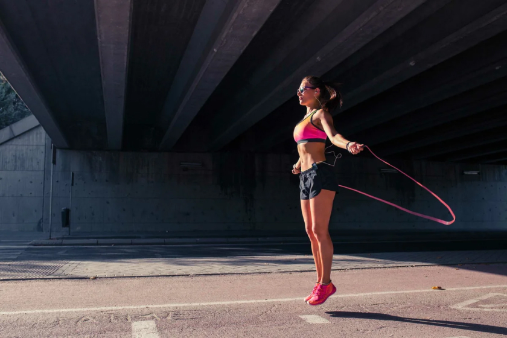

Простой комплекс упражнений для похудения дома, рассчитанный на ежедневные 20-минутные занятия. Эффективное снижение веса и проработка проблемных зон с помощью эффективных физических нагрузок.
Программы для начинающих
Если спортивный опыт отсутствует, кидаться с головой в изнемогающие тренировки не стоит. Добиться идеальных пропорций и подтянутого тела при помощи непосильных нагрузок не получится.
Любые мышцы требуют отдыха – именно в этот период они не только расслабляются, но и растут. А нетренированные мышечные ткани под действием нагрузок приходят в гипертонус намного быстрее, что требует и более длительного отдыха.
Поэтому программа домашних тренировок для девушек, которые раньше не занимались фитнесом, предусматривает не более трех силовых занятий в неделю с промежутками на отдых между ними в один день. Общее время каждой тренировки не будет превышать 40 минут. За этот период необходимо выполнить три сета, стараясь повторять каждое упражнение максимально возможное число раз, но не превышающее 20. Между каждым раундом делаем перерыв в 90 секунд.
Упражнения для снижения веса и укрепления мышечного корсета
Классическая «Планка» - это эффективное статичное упражнение за короткое время поможет добиться укрепления всех групп мышц, а также будет способствовать сжиганию жировых отложений в проблемных зонах. Для его выполнения не требуется специальное оборудование или инвентарь, в ходе тренировки можно слегка изменять положение конечностей, экспериментировать с количеством точек опоры, нагружая тем самым разные группы мышц и повышая свою выносливость.
Исходное положение – упор лежа на прямых руках, кисти направьте вперед и поставьте на одну вертикальную линию с плечами. Голова, спина, поясница и ноги должны быть выпрямлены, подбородок – немного приподнят. Напрягите мышцы брюшного пресса, при этом старайтесь не заваливать таз и не сгибать колени. Зафиксируйтесь в этом положении на 1 минуту, а затем можно опуститесь на колени или примите позу «Собаки мордой вниз», чтобы дать мышцам полноценно отдохнуть.
Для получения хороших результатов делать «планку» необходимо ежедневно, также рекомендуется увеличивать время выполнения упражнения на 30 секунд каждые 2-3 дня, постепенно доведя его до 3-х минут.
Упражнение Бурпи (Burpee) – отличный способ избавиться от лишнего жира и сделать фигуру стройнее. При его выполнении задействуются все группы мышц, и ускоряется общий метаболизм, поэтому лишние килограммы будут таять на глазах.
Присядьте на корточки, выставив ладони перед собой на ширине плеч. На выдохе, сделав прыжок ногами назад, примите упор лежа на прямых руках (классическое положение для отжимания). Напрягите мышцы спины и пресса, и прыгните одновременно двумя ногами в первоначальное положение, руки должны оставаться неподвижными. Сделайте вдох и выпрыгните максимально высоко вверх, поднимая руки и расправляя плечи.
Без остановки на передышку снова примите упор присев и повторите последовательность действий еще 12-15 раз в наиболее быстром темпе.
Прыжки «Звезда» - помогают в тренировке сердечной мышцы, ускоряют обмен веществ, укрепляют костную ткань, а также мышцы рук, ног, брюшного пресса и спины.
Станьте ровно, ступни расположите вплотную друг к другу, прямые руки опустите вдоль корпуса. Одновременно с выдохом подпрыгните на несколько сантиметров от пола, ноги расставьте на ширину плеч, а руки поднимите вверх через стороны (можно сделать хлопок ладонями). Выдохните и вернитесь в первоначальную позицию.
Сделайте 2-3 подхода по 15-20 прыжков. Следите за правильным дыханием – вдохи делайте через нос, а выдохи – через рот.
Выпрыгивания из глубокого приседа - Это упражнение укрепляет и моделирует форму ягодиц и четырехглавой мышцы бедра, улучшает метаболизм и способствует общему похудению. Во время выполнения выпрыгиваний из приседа нужно следить за правильностью техники и дыхания, для повышения нагрузки можно использовать специальные утяжелители.
Примите расслабленную ровную стойку, ноги расставьте на ширину плеч, руки скрестите на груди либо сцепите на затылке в замок. Сделайте умеренно глубокий вдох и присядьте так, чтобы бедра оказались параллельно полу, при этом старайтесь не отрывать ступни от пола и не заваливать таз. Если позволяет физическая подготовка, можно присесть и ниже. Одновременно с выдохом напрягите мышцы бедер и ягодиц и выпрыгните вверх с максимальной силой. Когда ступни опустятся на пол, сразу же вернитесь в присед и повторите последовательность действий.
Прыжки на скакалке - один из наиболее распространенных вариантов кардио-нагрузки, применяемый, как для похудения, так и для улучшения функциональных качеств атлета. Их используют практически в каждом виде спорта: фитнесе, единоборствах, кроссфите и многих других.
Это знакомое всем с детства упражнение позволяет потратить огромное количество калорий, улучшить координацию и анаэробную выносливость и увеличить общую интенсивность тренировки и любого функционального комплекса. Именно поэтому мы и рекомендуем взять это нехитрое (на первый взгляд) упражнение на вооружение и почаще вносить его в свой тренировочный процесс.
